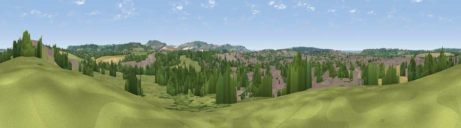

Viewpoint near Calne
#35472 in England · top 69% of its area beats it · near CalneWhere it is
The exact computed spot (SU 00725 71875). Click the marker for map links.
The view, rendered

A 360° render of this exact spot computed from the terrain model, tree cover and land cover — summer colours, afternoon light, calibrated against photographs of famous viewpoints. Real trees, hedges and buildings will differ in detail.
The panorama
Grey silhouette: terrain skyline in each direction (720 bearings, Earth curvature and refraction included). Dashed green: skyline with trees (+15 m) and buildings (+8 m) as obstacles. Blue strip: how far the ground is visible on each bearing.
Where the view opens
Wedge length = distance to the farthest visible ground on that bearing (vegetation-aware). Rings at 10, 25 and 50 km.
What fills the view
36% grassland · 28% built-up · 24% woodland · 11% cropland
Angular shares of the visible panorama (visual magnitude), not map area. Landscape diversity 0.58 (0–1 Shannon).
Key numbers
More beautiful places nearby
The staircase of upgrades: each row has a higher view potential than everything closer. Driving times are estimates from straight-line distance, calibrated against real road routing — check an actual route before setting out.
| Place | Direction | Drive | Score |
|---|---|---|---|
| Viewpoint near Compton Bassett | ENE · 4 km | ~8 min | 54.6 |
| Viewpoint near Bremhill | NW · 4 km | ~9 min | 57.3 |
| Viewpoint near Cherhill | ESE · 5 km | ~12 min | 71.2 |
| Viewpoint near Cherhill | SSE · 5 km | ~12 min | 73.6 |
| Morgan's Hill | SSE · 5 km | ~12 min | 74.3 |
| Viewpoint near Allington | SE · 10 km | ~20 min | 75.6 |
| Martinsell viewpoint | ESE · 19 km | ~32 min | 77.3 |
| Viewpoint near Nympsfield | NW · 36 km | ~55 min | 77.5 |
51.44586, -1.99096 · source: screening · position refined by local search. Computed location — check access rights before visiting.